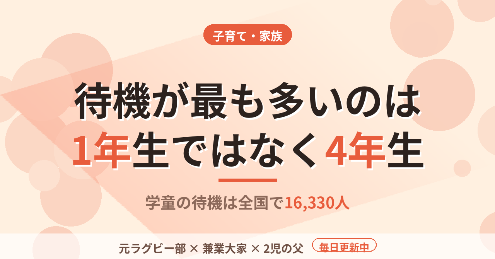

子育て・家族学童の待機は全国16,330人。多いのは1年生ではなく4年生の5,589人
上の子は2歳で、小学校はまだ先の話だ。ただ、保育園に預けて働く家庭が小学校に上がるときに突き当たるという「小1の壁」を、今のうちに数字で見ておきたかった。こども家庭庁が2025年12月に公表した、令和7年5月1日時点の放課後児童クラブ（学童保育）の実施状況を読んだ。
登録は157万人、待機は16,330人
クラブ数は25,928か所、支援の単位数は39,424。登録児童数は1,570,645人で、前年より50,693人増えている。一方、利用できなかった児童数、いわゆる待機児童数は16,330人で、前年から1,356人減った。登録は増え、待機は減っている。数字だけを見れば、全体としては改善の方向にある。
もう一つ、割り算をしてみた。登録児童数を支援の単位数で割ると、1単位あたり約39.8人になる。国の運営基準は、1つの支援の単位をおおむね40人以下と定めている。平均で見ても、すでに上限のすぐ手前まで埋まっているわけだ。クラブを増やすだけでなく、1つ1つの教室の広さと人手が、受け入れの限界を決めている。
登録した子と待てなかった子を足した希望者のうち、待機は約1％。この数字だけで「学童は入れる」と読むのは早い。内訳を見ると、様子が変わる。
待機が最も多いのは4年生だった
学年別の待機児童数は、1年生が1,966人、2年生が1,805人、3年生が3,305人、4年生が5,589人、5年生が2,644人、6年生が1,021人。最も多いのは4年生で、全体の約34％を占める。4〜6年生を合わせると9,254人で、約57％になる。
登録の側は逆の形だ。1〜3年生は1,217,267人で、4〜6年生の353,378人の3倍を超える。登録の約78％は低学年である。低学年は入れていて、高学年になるほど入れない子の割合が高い。こう読める。なぜ4年生が多いのかは、この資料からは分からない。
「小1の壁」という言葉から、僕は1年生の春だけを想像していた。待機の数でいえば、壁は4年生の側にもある。
学年が上がれば、授業が終わる時間は遅くなり、習い事や友達との約束も増える。それでも親の勤務が終わるのは、変わらず夕方以降だ。高学年だから放っておいても大丈夫、とは言い切れないと、数字を見て考え直した。
子が2人だと、壁が重なる
うちは2歳と0歳。2歳差なら、上が4年生のとき、下は2年生になる。学童の話は、1回の入学準備では終わらない。低学年の預け先と高学年の預け先を、同じ年に別々に考えることになる。
共働きの我が家では、親の勤務時間は小学生になっても変わらない。学校が終わる時間と、親の仕事が終わる時間のあいだを、誰がどこで埋めるのか。保育園のときは園が埋めてくれていた部分を、小学校からは家庭が選んで組み立てる。その組み立てを、数字を知らないまま始めるのと、4年生に壁があると知って始めるのとでは、準備の順番が変わる。
利用料や申し込みの時期は自治体ごとに違うと聞く。数字は国の集計で、我が家の街の空き状況はまだ何も分かっていない。入学の前年に、住んでいる自治体の募集要項を読む。まずはその時期を決めておく。学童は1年生の春だけの問題ではない。
---
児童手当の申請期限や育休の給付、通園制度など、妊娠から小学校入学までの制度とお金を、時期の順に14項目の表にまとめた。我が家で取りこぼしかけた3つの落とし穴も入れている（有料・100円）。
この記事は note にも掲載しています。